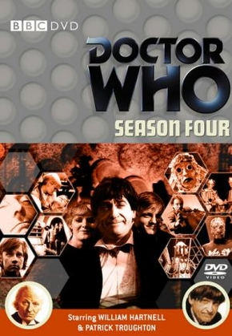

2º Doutor
Ele sendo o primeiro Doutor pós regenerado. Foi uma total mudança de personalidade: da figura de um avô para a de seu tio favorito. Caloroso, palhaço e trapalhão, este Doutor escondia sua imensa sagacidade, para que o subestimassem e assim, ele pudesse dar cabo aos seus planos. Por trás desta aparência displicente, sempre havia um raciocínio meticuloso nas ações deste Doutor. Ele era impiedoso com seus inimigos recorrentes, como os Cybermen. Sempre levava consigo uma flauta, que tocava ocasionalmente por ele nas horas mais inconvenientes, e um diário de 500 anos no qual registrava suas aventuras. Durante quase toda esta encarnação, viajou com o escocês Jamie McCrimmon, fiel companheiro do século XIX.
O 2º Doutor, interpretado por Patrick Troughton (1920 – 1987), tem um total de 3 temporadas com 21 arcos exibidos entre 1966 a 1969, totalizando 129 episódios de 25 minutos,
Companheiros: Polly, Ben, Jamie, Victoria, Zoe
Patrick Troughton teve três participações nos especiais de 10 e 20 anos da série (The Three and Five Doctors), e no arco The Two Doctors, com o 6º Doutor.
Os posts com informações e curiosidades dos arcos do 2º Doutor, portanto iremos disponibilizá-los aos poucos. Porém, você pode assistir a toda era do 2º Doutor online e legendada abaixo.
Está disponível no site a função torrent, com cada temporada completa, mas o site não recebe vários tipos de arquivos, só recebe documento docx. Você tem que entrar no arquivo e copiar o link magnet., depois vai no aplicativo BitTorrent ou uTorrent, e aperte no ícone: adicionar torrent da URL. Aí cola o link magnet. e aperta OK, que já vai começar a abaixar.
Em Breve Links Ativado
SÉRIE
4ª TEMPORADA - PARTE 2

5ª TEMPORADA
6ª TEMPORADA